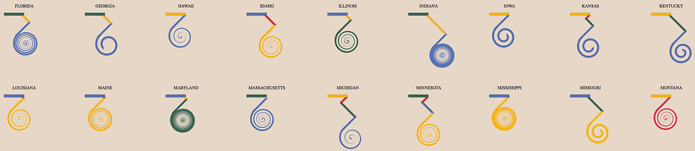
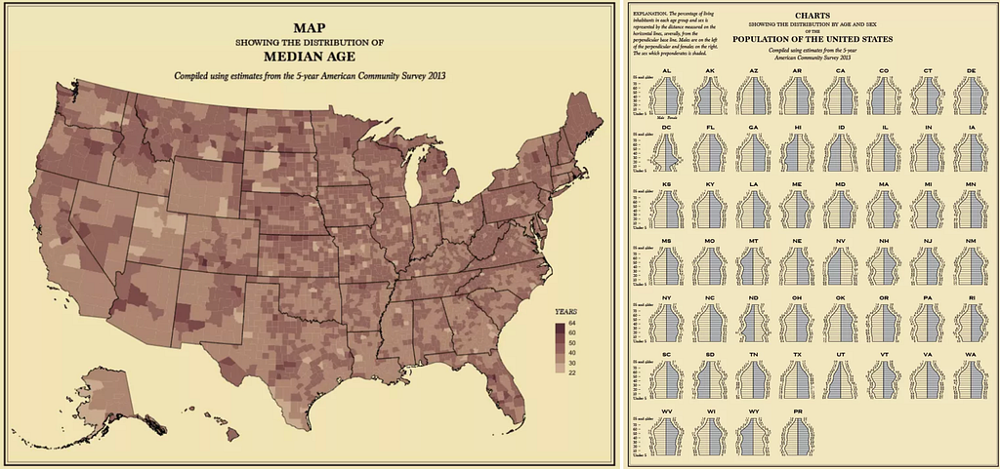
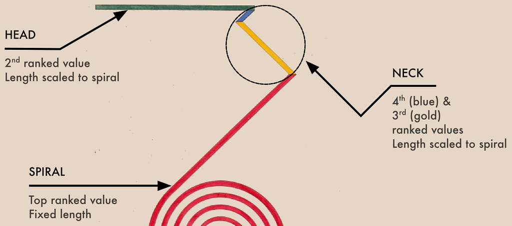
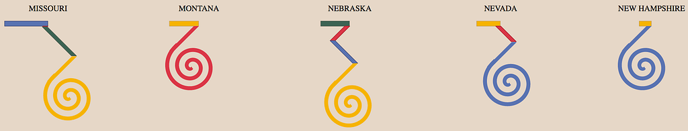
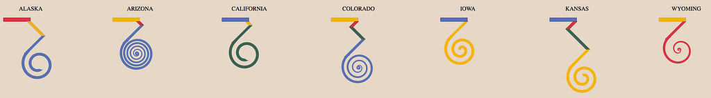
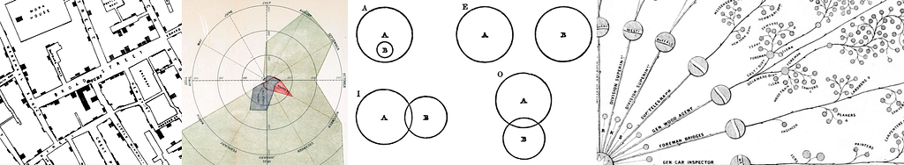

W. E. B. Du Bois pioneered the sociological study of race in America. He was a founder of the NAACP. In text and speech, he described the struggle of African Americans in a time of legal segregation and widespread lynching. He also created striking data visualizations. The work he did, which has been on display in museums and the subject of numerous retrospectives, focuses on racial dynamics from the late 19th and early 20th century. Among them was this beautiful piece.
I call it a Du Bois Spiral. It’s aesthetically compelling in the way it encodes urban to rural demographics. It’s also yet another example of complex data visualization from back before we all got so conservative and regressive.
Du Bois knows you cannot precisely compare the lengths of those diagonals and spirals, and so he writes the number to go along with them. It provides the exact number of African Americans living in the various parts of Georgia as well as a more striking summary: the almost absurd ratio of red to any other color. Finally, tucked away in the “neck” of the visualization is the lack of representation of African Americans in medium-sized cities. African American life in Georgia in the late nineteenth century was overwhelmingly, dramatically rural, with a significant urban character but with almost no representation in small towns. That story is encapsulated in this graphic better than any bar chart.
Historical works like these can provide more than just inspiration to a modern data visualization practitioner. They also provide material for one of the most effective ways to enhance your skills: remaking historical data visualization. You could remake the original by using a data visualization library like D3 or by hand (as the original author has done). That’s useful, but more valuable is to try to break down the rules by which the original was created and produce new data visualization products with those rules.
That’s what Nathan Yau did when he took the Statistical Atlas of the United States and remade it with modern data.

This approach improves your understanding of the structure and rules for presenting information. It also teaches you by example techniques to supplement and contextualize that information. And it provides solid aesthetic patterns to follow. In the particulars, it typically has useful challenges like implementing the small multiples on the right.
For something like the Du Bois Spiral, there’s a different approach: deriving the rules for a novel visualization. Ben Schmidt did this with Minard’s Map of the Invasion of Russia. From the rules he derived, Ben came up with d3.trail, a library for drawing complex geographic paths. With it, you can create a Minard’s Map of whaling ships, or a Minard’s Map of visitors to a website. You can also take the original map and animate it, as Ben has done.
That’s the approach I took with the Du Bois Spiral. First, you need to identify the rules implied by the data visualization. That means measuring the pieces, naming them, and understanding the technical requirements for drawing them.
It also means understanding the piece as visual rhetoric. Put another way: why is this piece impactful? While a Du Bois Spiral sacrifices precision by looping one of the datapoints, this is actually the purpose of the graph: to emphasize just how many African Americans lived in rural areas in contrast to those that lived in cities and towns. In breaking it down, I saw the length of the spiral as the maximum, and drew the other areas scaled by that length. The two pieces in the neck are the fourth-ranked and third-ranked metrics, accordingly. For my purposes, I’m ignoring the annotation of the different pieces, even though it’s a critical component of the original. But I was more interested in understanding how to generate the graphical components rather than placing the labels.

The results encode the impact measure still in the spiral for an individual implementation. But since that spiral never changes, the major point of variation in a small multiples set of Dubois Spirals is actually in the head and neck. You can think of the major point of variation as the most graphically distinct subcomponent of a glyph when that glyph is placed in contrast to other glyphs built according to the same rules. Taking census data of the United States by county and the area of those counties (to derive population density) gave me a dataset of ethnic groups by state in buckets roughly similar to those that Du Bois originally used. It allowed me to draw spirals for every state and every ethnic group in the census, which you can browse through here.

I like the difference in graphical patterns in the spirals and it’s useful to keep the most exotic shape (the spiral itself) at a fixed amount of ink. But I don’t think it embraces the design of Du Bois’ original graphic, which was using the spiral to signal graphically how wildly disproportionate a population was distributed. And so I went back and reexamined it, and considered the length of the head to be the basis for the lengths of the other components (rather than the length of the spiral above).
By keeping the head at a fixed length and basing the size of the remaining pieces (including the spiral) off of the scale set by that fixed length, you produce dramatically different spirals. Like the original Du Bois Spiral this emphasizes two insights: how dramatically a population is found in its primary density, but also where the second-largest concentration is in comparison. It also has the added benefit of typically encoding the same negligible values associated with the third and fourth-ranked parts of the measured states. A few examples are below but if you’d like you can see all the spirals using this formulation for all the states and all the census ethnic categories.

According to the US Census, if one is white and lives in Arizona, it’s primarily a suburban experience, and the same could be said of Alaska. But in Alaska the next largest concentration is in rural areas and the difference is not so dramatic, whereas in Arizona while the second-largest concentration is in small towns, the difference is extreme. In contrast, California is primarily an urban experience with so few people living in the parts of the state where population density is low enough to qualify as “rural”. Wyoming, as a result of the state’s overall population density, is only small-town and rural, without too much of a dramatic difference in concentration between the two. States like Kansas and Colorado, where the population is spread evenly enough between the four categories to register in this graphic, are not surprisingly rare.
It’s more graphically interesting. Each glyph is more unique and striking in how tightly wound its spiral is. But even more than the original Du Bois Spiral, it runs into the problem that many populations are so out of scale in their demographics that the spiral becomes a moiré pattern. So, in a production version of this diagram, I’d make sure to follow Du Bois’ original impulse to include the raw numbers.
There’s a final approach I didn’t take, which was to keep the order of the demographic distribution the same (urban to rural as a spectrum from head to spiral). I quickly discarded it because it ended up with extremely long lines in the head and neck, because most populations do not, in the modern day, reside in rural areas. It provides an interesting avenue for later work, though, if one thinks about ways to encode the spirals in the head and neck regions, so that they “spiral” when they reach a certain magnitude.
Aesthetically, I’d like to focus in on one of the anachronisms of historical data visualization. You’ll notice these examples are not on a white background but rather on a background that is popular in certain segments of the data visualization field: that yellowed, “aged paper” look. When reconstructing historical data visualization products, we should remember that they are not as they originally appeared. The paper was not yellow back then. The original text was more sharply rendered. The paint or ink used to make them was likely fugitive — meaning it faded or changed color in the intervening years. When we make a piece and try to give it a historical feel, try to keep in mind anachronisms like that. Du Bois might have appreciated my spiral algorithm but probably would have wondered why I chose such faded colors and yellowed paper. In my defense, I feel that a weathered or faded graphical appearance changes the mode (and the mood) of the reader. It sets them outside of an analytical frame and into a more comprehensive reading. Because the Du Bois Spiral is one of those data visualization forms that sacrifices numerical precision in order to encode other aspects of the data, it seems like a useful way to get the most impact out of a diagram like this.

I wonder whether Du Bois’ willingness to pursue novel attempts at representing data was somehow tied to his willingness offer radical conceptualizations of race and society. It’s a common theme in historical data visualization: the people who create them seemed to be more willing to look at a problem with an eye to a new solution. Florence Nightingale’s diagrams attempting to better understand the causes of death in war, Christian Weisse’s diagrams to “sensualize… the abstractions of Logic”, John Snow’s map of cholera cases presaging modern GIS, Daniel McCallum’s organizational chart masterpiece. In every case it is not a foolish person frivolously innovating, but a challenge to reimagine a system to better understand it. When you read or remake historical data visualization, you learn technical and graphical skills, and along the way you might also learn the value of challenging tradition.